Chapter 7 Data Visualization with ggplot2
In this chapter, we will learn to use ggplot2 to do data visualization tasks. Before the lecture, please install the package first.
install.packages("ggplot2")7.1 Grammer of Graphics (gg)
We have grammar for languages. We also have grammar for graphics. That’s where gg of ggplot2 comes from. For ggplot2, it has seven grammatical elements listed in the table below (DataCamp 2019).
| Element | Description |
|---|---|
| Data | The dataset being plotted. |
| Aesthetics | The scales onto which we map our data. |
| Geometries | The visual elements used for our data. |
| Facets | Plotting small multiples. |
| Statistics | Representations of our data to aid understanding. |
| Coordinates | The space on which the data will be plotted. |
| Themes | All non-data ink. |
Let’s take the codes below as a simple example to show how those different elements work in ggplot2. From this example, we might have a general idea what is each element and how does it work. We will talk about each element in details later.
library(ggplot2)
data(mtcars)
ggplot(mtcars, # Data
aes(x = mpg, y = wt)) + # Aesthetics
geom_point() + # Geometries
facet_grid(. ~ gear) + # Facets
stat_smooth(method = "lm", se = FALSE, col = "blue") + # Statistics
scale_x_continuous('Miles/(US) gallon',
limits = c(0, 40)) +
scale_y_continuous('Weight (1000 lbs)',
limits = c(0, 7)) + # Coordinates
theme_bw() # Themes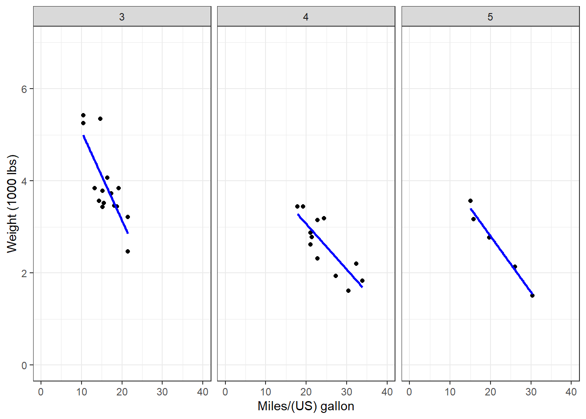
7.2 Data, Aesthetics, and Geometries
Generally, if you want to draw figures with ggplot2, you need at least three elements, which are data, aesthetics, and geometries. Data is the dataset we want to visualize. Aesthetic specifies the variables and related attributes. Geometry indicates the plot type and related attributes. Take the example above again. We want to visualize the variables of mpg and wp (aesthetic) of the dataset mtcars (data) with a scatter plot (geometry).
Similar to dplyr, ggplot2 also has its own fashion of coding. We start with the ggplot() function. Please pay attention that there is no 2 in the name of the function. In the function, we first indicate the name of the dataset or data frame. Then we use aes() to indicate the scales we want to map our data. Here, we map mpg to x axis, and wt to y axis. Then we use a plus sign + to connect it to other functions. We are going to draw a scatter plot, so we use geom_point().
ggplot(mtcars, # Data
aes(x = mpg, y = wt)) + # Aesthetics
geom_point() # Geometries
We could see the result and it is following our codes. Based on this plot, we have a overall idea of the relationship between wt and mpg, which is wt has a negative relationship with mpg. This result makes sense to us. If a car is lighter and it could drive farther with the same amount of gasoline. (Please remember that this relationship is just a type of correlation, not causality.)
We could add more attributes in the aesthetic element. For example, we could use color to indicate the value of hp by adding col = hp.
ggplot(mtcars,
aes(x = mpg, y = wt, col = hp)) +
geom_point()Now we have more information in the result. While the weight is heavier, the hourse power is stronger.
Here, hp is a continuous variable, so ggplot2 uses the darkness of the color to indicate the value. However, if we use a categorical variable or a factor (e.g. binomial variable), ggplot2 will use different colors to show different types.
ggplot(mtcars,
aes(x = mpg, y = wt, col = factor(am))) +
geom_point()
Here, am stands for the types of transmission system (0 = automatic, 1 = manual). We use factor() to transfer this variable to a categorical one. ggplot2 uses one color for automatic transmission and another color for manual transmission.
Besides color, there are several other parameters to show different aesthetics of the plots. There are differences between the usages of continuous variable and categorical variable. If you want to map variables in those aesthetics, you have to do it in the aes() function.
| Parameter | Description | Continuous variable | Categorical variable |
|---|---|---|---|
| x | x axis position | ✓ | |
| y | y axis position | ✓ | |
| size | Diameter of points, thickness of lines | ✓ | |
| alpha | Transparency | ✓ | ✓ |
| color | Color of dots, outlines of other shapes | ✓ | ✓ |
| fill | Fill color | ✓ | ✓ |
| labels | Text on a plot or axes | ✓ | |
| shape | Shape of point | ✓ | |
| linetype | Line dash pattern | ✓ |
As for geometries, there are many different types you can use for different plots. For examples, geom_point() for scatter plot, geom_bar() for bar plot, geom_boxplot() for boxplot, etc. Most functions of geometries are self-explained, so you could tell what their usages easily. We all talk about those commonly used geometries such as scatter plot, bar plot, line plot, etc in the following parts.
7.2.1 Scatter plot
We use geom_point() to plot scatter plot in R with ggplot2. In the example below, we map mpg to x axis, and wt to y axis. We indicate the transparency by set alpha = hp. The transparency of each point is decided by its value of hp.
ggplot(mtcars,
aes(x = mpg, y = wt, alpha = hp)) +
geom_point()
7.2.2 Bar plot
In the example below, we draw a bar plot to show the number of cars with different tansmission systems. In aes(), we only indicate the variable am. R then will count the number for each transimission type. We use geom_bar() to plot it.
ggplot(mtcars,
aes(x = am)) +
geom_bar()
Go back to our previous example, which is different from the example above.
year <- c(1998:2003) # create variable year
sales <- c(500, 600, 650, 700, 400, 550) # create variable sales
df <- data.frame(year, sales) # combine the variables into one data frame called df
ggplot(df, aes(x = year, y = sales)) +
geom_bar(stat = 'identity') # you need to specify stat = 'identity' to plot the actual value for each year, not countOr you could use another geometry called geom_col() to do it easily.
ggplot(df, aes(x = year, y = sales)) +
geom_col()
7.2.3 Line plot
To show the usage of line plot in ggplot2, we use a new dataset economics from the ggplot2 package. This dataset is produced from US economic time series data. Use help() to check more information of this dataset.
In this example, we use geom_line() to draw a line plot.
data(economics)
ggplot(economics,
aes(x = date, y = unemploy)) +
geom_line(col = 'Blue') # indicate the color of the line by setting col = 'Blue'
In this plot, it shows clearly the temporal trend of the number of unemployed population in the US. There two increase recently starting from 2001 and 2008, which match two economic risks around 2001 and 2008.
7.2.4 Boxplot
In the example below, we draw a boxplot for each transmission type. To do this, we map am to the x axis, and mpg to the y axis. We use as.factor() to transfer am to a factor (categorical variable).
ggplot(mtcars, aes(x = as.factor(am), y = mpg)) +
geom_boxplot()7.2.5 Pie chart
In ggplot2, it is not as intuitive as the base function pie() to draw a pie chart. We use the same example to see the difference.
year <- c(1998:2003) # create variable year
sales <- c(500, 600, 650, 700, 400, 550) # create variable sales
df <- data.frame(year, sales) # combine the variables into one data frame called df
ggplot(df, aes(x = '', y = sales, fill = factor(year))) +
geom_bar(width = 1, stat = 'identity') +
coord_polar('y') # transfer the coordinate system to the polar one
Whatggplot2 does here to draw a pie plot is to create a bar plot first.
ggplot(df, aes(x = '', y = sales, fill = factor(year))) +
geom_bar(width = 1, stat = 'identity')
And then transfer the coordinate system to the polar one.
ggplot(df, aes(x = '', y = sales, fill = factor(year))) +
geom_bar(width = 1, stat = 'identity') +
coord_polar('y')
7.3 Facets
If you want to split up your data by one or more variables and plot each subset in one figure, facet is the element you want to use.
In the following example, we draw a scatter plot for each number of forward gears. In each plot, we map mpg to the x axis and wt to y axis. The three plots are aligned in a row.
p <- ggplot(mtcars, # store the plot result in variable p
aes(x = mpg, y = wt))
geom_point()## geom_point: na.rm = FALSE
## stat_identity: na.rm = FALSE
## position_identityp + facet_grid(. ~ gear) # Facets, for each number of forward gears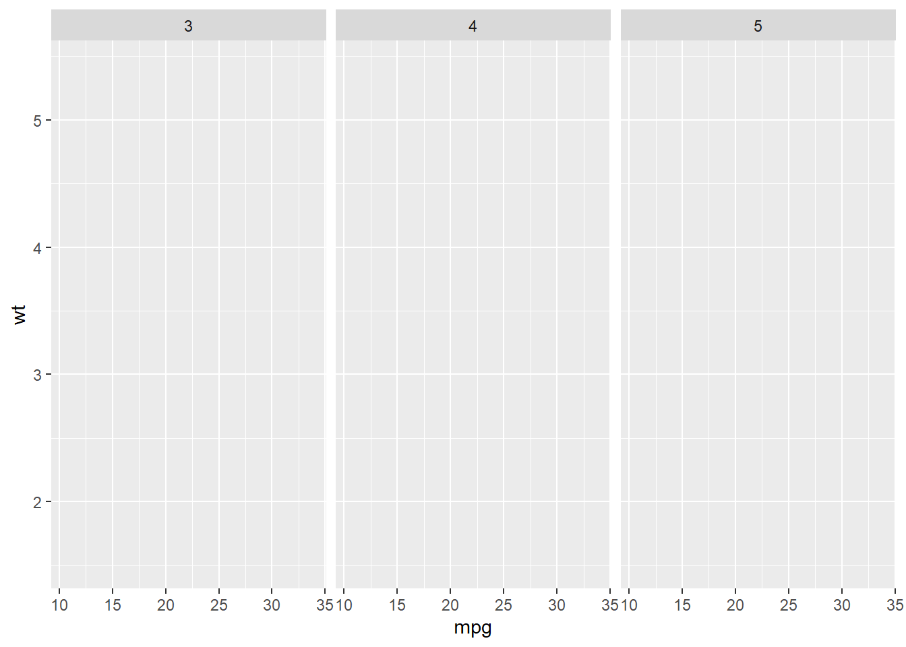
If we want to align the plots in a column, exchange the position of the varialbe in the function.
p + facet_grid(gear ~ .) # Facets, pay attention to the position of gear and the dot sign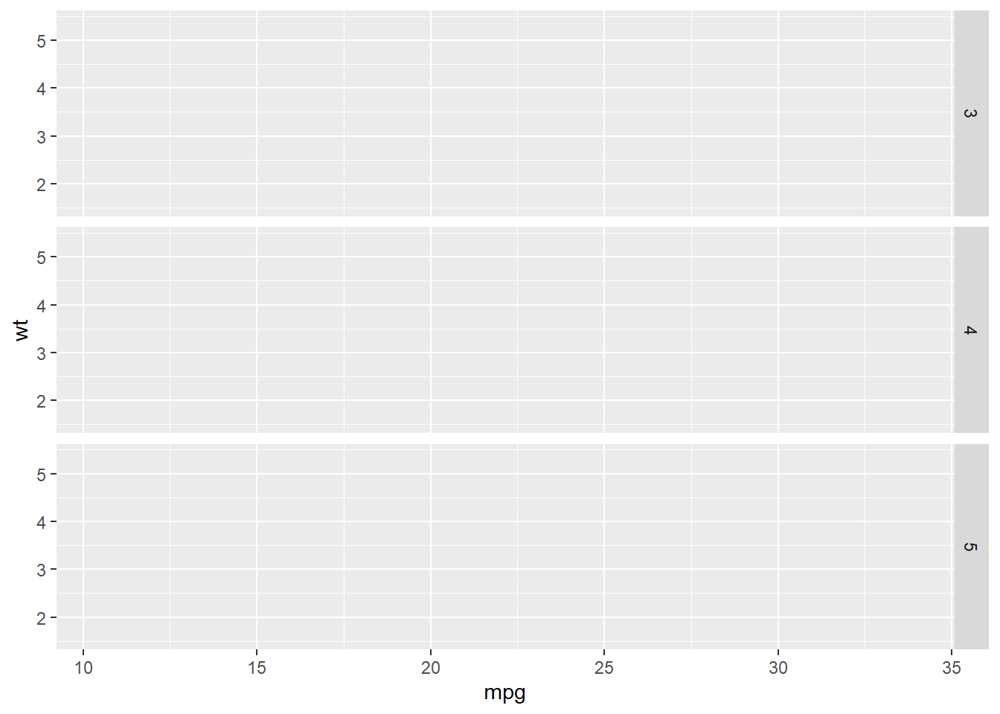
We could put more variables to split the plots. In the following example, we put one more variable vs in the facet_grid().
p + facet_grid(vs ~ gear) # add vs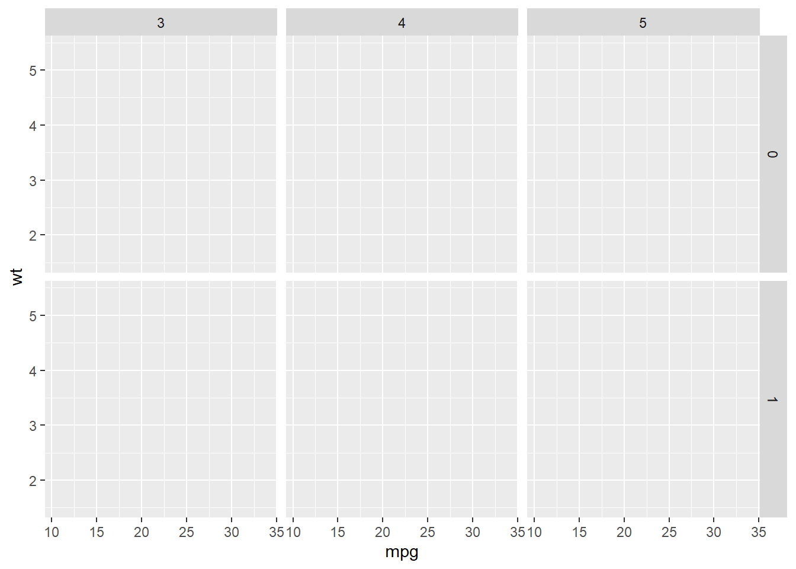
We could use the margins = T to add more plots showing the aggregation of the plots in each column or row.
p + facet_grid(vs ~ gear, margins = T) # add aggregation plots for each row and columnWe could use labeller = label_both to add more information in the label.
p + facet_grid(vs ~ gear, labeller = label_both) # add more info in the label
7.4 Statistics
You could fit a line to see the general trend of the scatter plot by adding stat_smooth().
p <- ggplot(mtcars,
aes(x = mpg, y = wt)) +
geom_point()
p + stat_smooth(method = "lm") # linear line## `geom_smooth()` using formula 'y ~ x'
p + stat_smooth(method = 'loess') # non-linear line## `geom_smooth()` using formula 'y ~ x'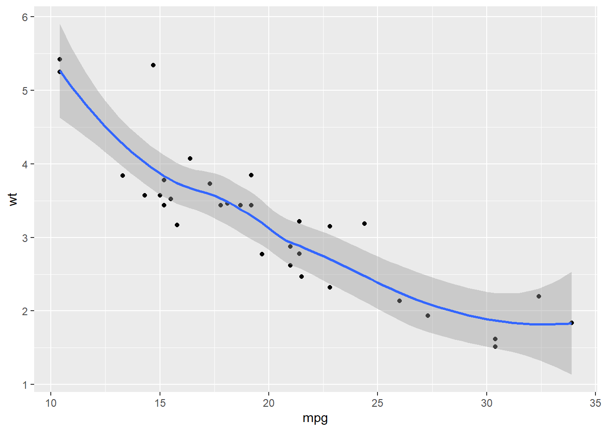
You could draw a histogram for the dataset.
p <- ggplot(mtcars, aes(mpg))
p + geom_histogram(binwidth = 5) # the width of each category is 5
p + geom_histogram(bins = 3) # the number of bins is 3
You could fit a denisty line for the histogram.
p + geom_histogram(aes( y = ..density..), binwidth = 3, col = 'Black', fill = 'White') + # use density instead of count
geom_density(alpha=.2, fill="Gray") 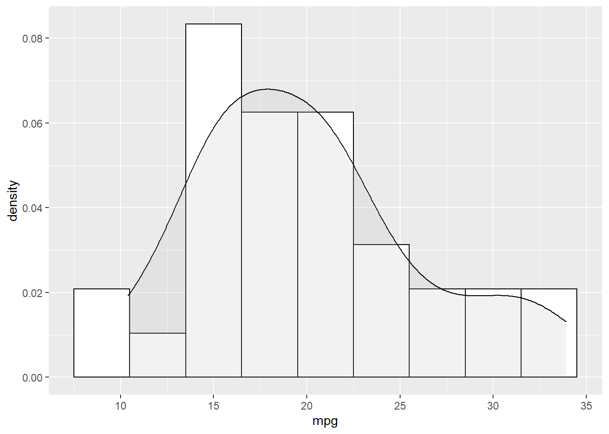
Another way to show more statistics about your data is boxplot, which we have been introduced before.
p <- ggplot(mtcars, aes(x = factor(gear), y = mpg))
p + geom_boxplot()7.5 Coordinates
While there are many coordinate systems supported by ggplot2, the most commonly used is Cartesian coordinate system, which is the combination of x axis and y axis orthogonally.
7.5.1 Zooming in and out
In the following example, we zoom in our plot to a specific area.
p <- ggplot(mtcars, aes(x = mpg, y = wt)) +
geom_point()
p + coord_cartesian(xlim = c(10, 30), ylim = c(2,4))7.5.2 Ratio
We could change the ratio of the length of a y unit relative to the length of a x unit (\(\frac{\text{y unit}}{\text{x unit}}\)).
p <- ggplot(mtcars, # Data
aes(x = mpg, y = wt)) + # Aesthetics
geom_point()
p + coord_fixed(ratio = 1) # 1 means x and y axes have the same unit
p + coord_fixed(ratio = 5)7.5.3 Swaping the axes
p + coord_flip()
ggplot(mtcars, aes(x = as.factor(am), y = mpg)) +
geom_boxplot() +
coord_flip()
ggplot(mtcars, # Data
aes(gear)) + # Aesthetics
geom_bar() +
scale_y_reverse()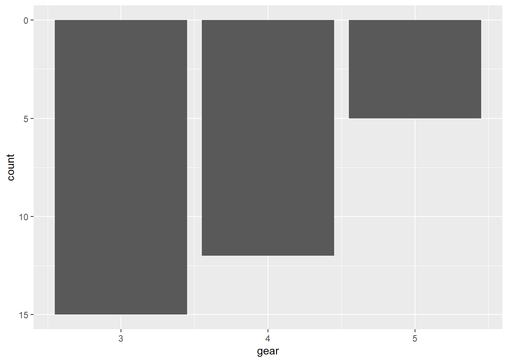
7.5.4 Polar coordinate system
We touched the polar coordinate system a little bit when drawing a pie chart.
ggplot(mtcars, aes(x = '', fill = factor(gear))) +
geom_bar(width = 1) +
coord_polar(theta = 'y')We could do this in a different way.
ggplot(mtcars, aes(factor(gear))) +
geom_bar(width = 1, col = 'Black', fill = 'Grey') +
coord_polar()
7.6 Themes
ggplot2 is powerful in its flexibility of themes.
7.6.1 Add labels
Add labels with labs() function.
p <- ggplot(mtcars, aes(x = mpg, y = wt)) +
geom_point()
p + labs(title = 'Plot 1', # title of the plot
subtitle = 'Subplot1', # sub title
x = 'Miles/(US) gallon', # x label
y = 'Weight (1000 lbs)') # y label
Or use ggtitle(), xlab(), and ylab() instead.
p + ggtitle('Plot1') +
xlab('Miles/(US) gallon') + # x label
ylab('Weight (1000 lbs)') # y label7.6.2 Change ticks
Here is an example of changing the ticks for a discrete variable.
p <- ggplot(mtcars, aes(x = factor(am), y = mpg))
p + geom_boxplot() +
scale_x_discrete(name = "Transmission", # name of the x axis
labels = c('Automatic', 'Manual')) # change 0 and 1 to automatic and manaual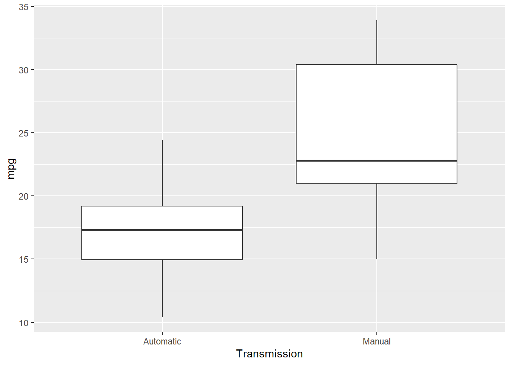
7.6.3 theme() function
theme() function could help to change the styles of every components of the plots. Here are a few examples about it (ggplot2 2019).
p <- ggplot(mtcars, aes(x = wt, y = mpg)) +
geom_point() +
labs(title = 'Fuel economy declines as weight increases')
p # original plotWe could use plot.title to change the style of a title in the plot. In the following exmaple, we change the font size of the title by setting element_text() and making size to be twice larger as the default one.
p + theme(plot.title = element_text(size = rel(2)))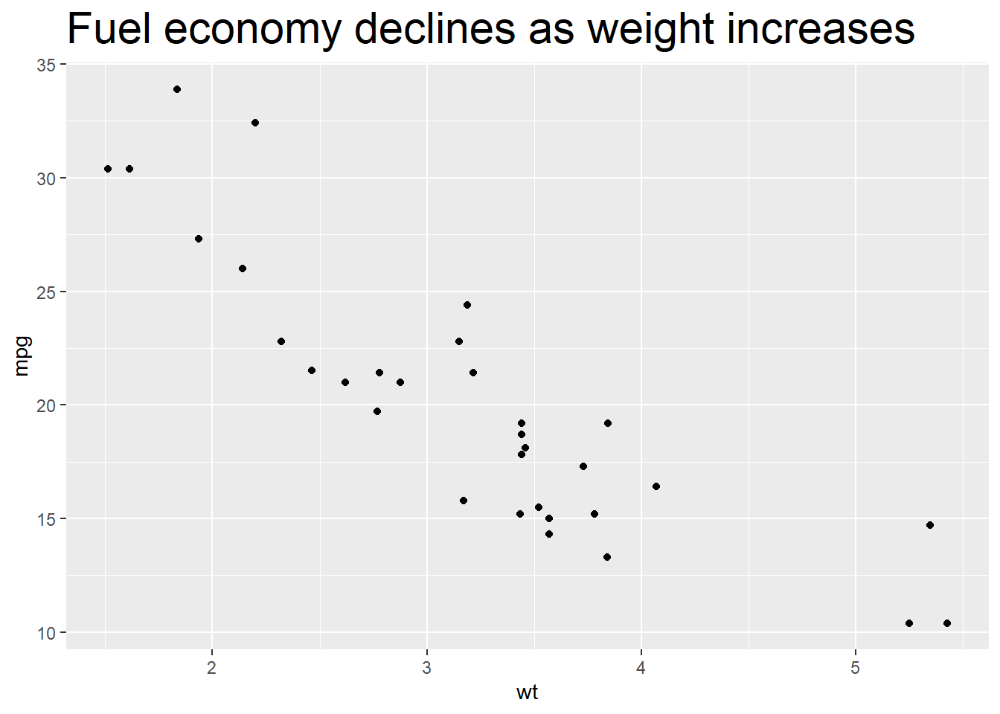
We could also use absolute value to indicate the size directly.
p + theme(plot.title = element_text(size = 15))We could change the background of the plot by setting the value of plot.background in the theme() function. For example, if we want to change the color, we could set element_rect() and fill = 'red'.
p + theme(plot.background = element_rect(fill = 'red'))More specifically, if we want to change the style of the panel, which is the inner part restricted by x and y axes, we could set the value of panel.background.
p + theme(panel.background = element_rect(fill = 'green', colour = 'red'))We could set the line type of the panel’s border.
p + theme(panel.border = element_rect(linetype = 'dashed', fill = NA))Change the attributes of the lines for the grid. element_line() stands for the attributes of the lines.
p + theme(panel.grid.major = element_line(colour = 'black'),
panel.grid.minor = element_line(colour = 'blue'))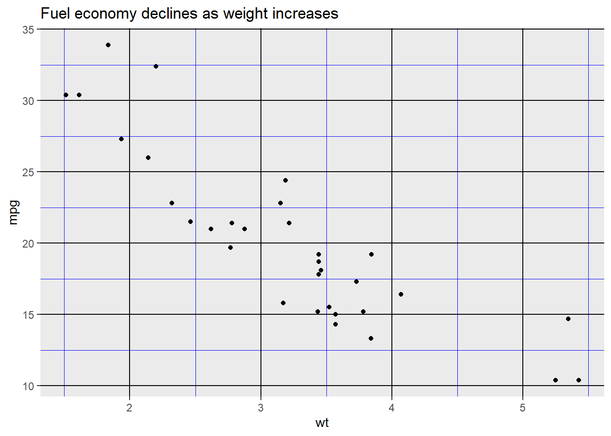
Use element_blank() to remove the themes of the target.
p + theme(panel.grid.major.y = element_blank(),
panel.grid.minor.y = element_blank())
We could put the gridline on the top of our data by setting panel.ontop = TRUE.
p + theme(
panel.background = element_rect(fill = NA),
panel.grid.major = element_line(colour = 'Blue'),
panel.ontop = TRUE
)Change the line style of the axis.
p + theme(
axis.line = element_line(size = 3, colour = 'red')
)Change the text style of the axis.
p + theme(
axis.text = element_text(colour = 'Green', size = 15)
)
Change the attributes of the text for the axis ticks.
p + theme(
axis.ticks = element_line(size = 1.5)
)And y label.
p + theme(
axis.title.y = element_text(size = rel(1.5), angle = 30)
)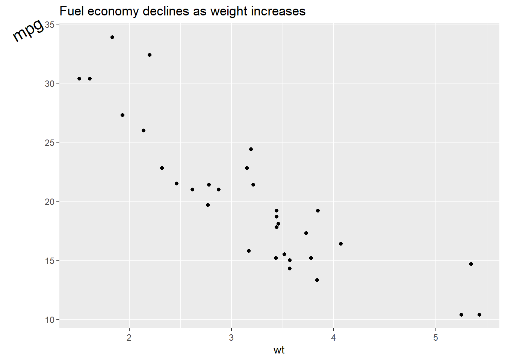
Now, let’s see what we could do for the legend.
p <- ggplot(mtcars, aes(wt, mpg)) +
geom_point(aes(colour = factor(cyl), shape = factor(vs))) +
labs(
x = 'Weight (1000 lbs)',
y = 'Fuel economy (mpg)',
colour = 'Cylinders',
shape = 'Transmission system'
)
pRemove the legend by setting its postion as legend.position = 'none'.
p + theme(
legend.position = 'none'
)p + theme(
legend.position = 'top'
)
By setting legend.justification for the legend, we anchor point for positioning legend inside plot (“center” or two-element numeric vector) or the justification according to the plot area when positioned outside the plot
p + theme(
legend.justification = 'top'
)p + theme(
legend.position = c(.95, .95),
legend.justification = c('right', 'top'),
legend.box.just = 'right'
)
p + theme(
legend.box.background = element_rect(),
legend.box.margin = margin(6, 6, 6, 6)
)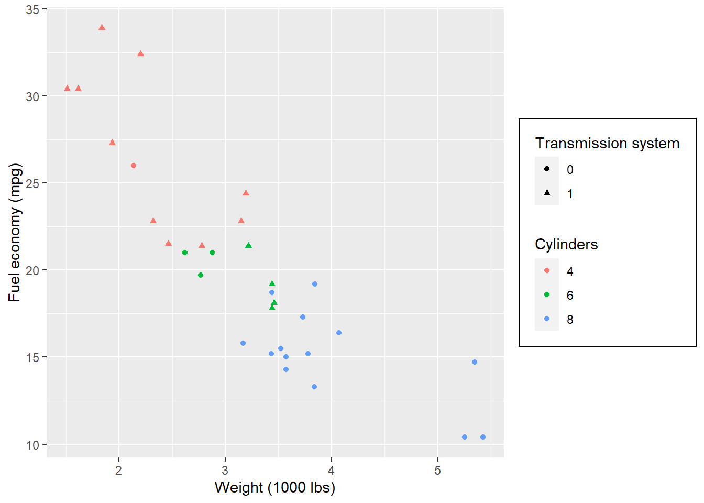
Set attributes for the key of the legend.
p + theme(
legend.key = element_rect(fill = 'white', colour = 'black')
)Set attributes for the text of the legend.
p + theme(
legend.text = element_text(size = 8, colour = 'red', face = 'bold')
)If you do not like to customize the theme one element by one element. ggplot2 also provides some function which give you a complete theme. For example, the theme_bw() we used at the start of this lecture.
p + theme_bw()p + theme_minimal()p + theme_dark()Please check here for more complete theme.